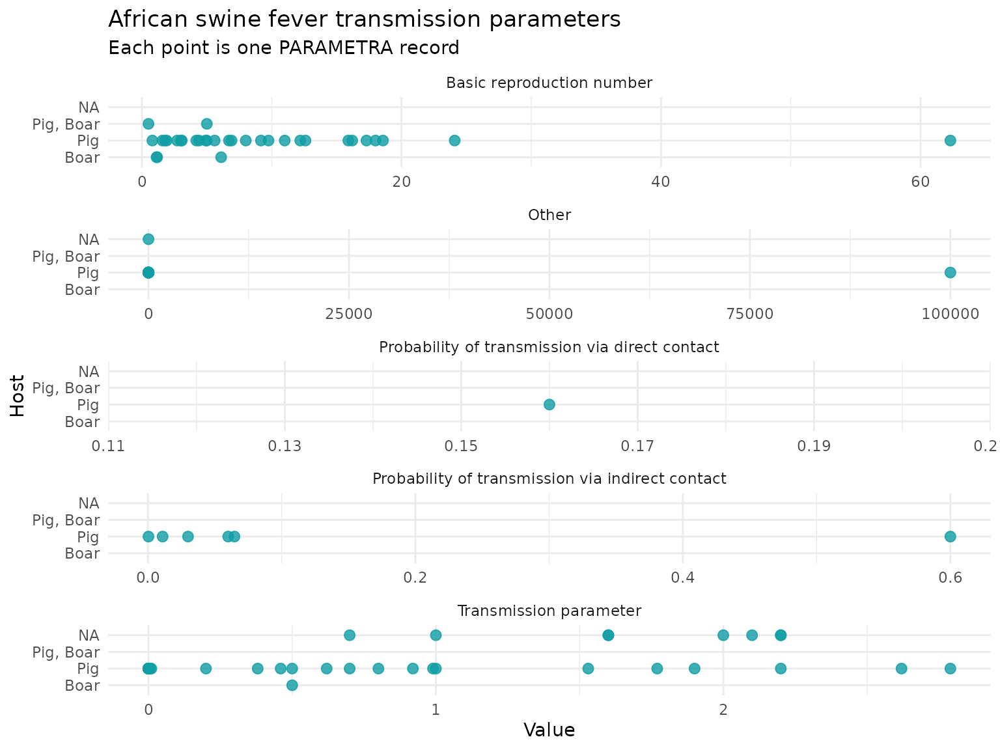
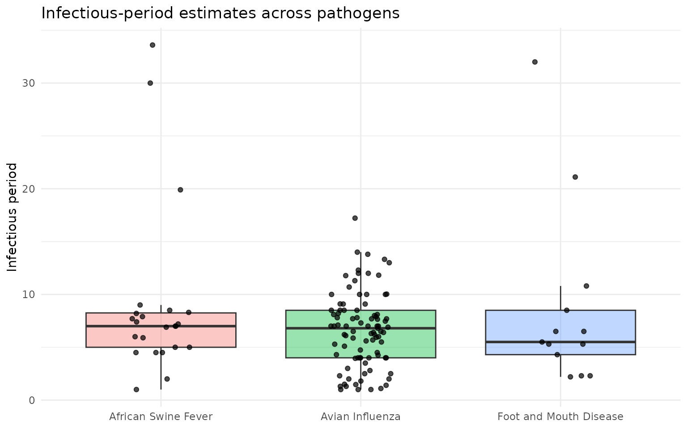

Introduction
PARAMETRA is an R data package containing curated parameters for
livestock disease modelling. The package includes one combined dataset,
parametra_long, plus one dataset per parameter group.
Installation
# Install from GitHub
# install.packages("remotes")
remotes::install_github("BIOSECURE-EU/parametra")Data included in the package
The main dataset is parametra_long, which stacks all
parameter-group tables into a single analysis-ready table. The column
parameter_type identifies the original parameter group.
A quick overview of the number of records by parameter group:
## # A tibble: 8 × 2
## parameter_type n
## <chr> <int>
## 1 transmission 1076
## 2 diagnostic_test 721
## 3 infectious_latent_incuba_period 420
## 4 within_herd_prevalence 175
## 5 regional_prevalence 92
## 6 pathogen_survival 48
## 7 other 22
## 8 control_plan 9And the number of records by pathogen:
## # A tibble: 24 × 2
## pathogen n
## <chr> <int>
## 1 Avian Influenza 577
## 2 Paratuberculosis 313
## 3 E. coli 300
## 4 Hepatitis E 248
## 5 African Swine Fever 186
## 6 Bovine Tuberculosis 177
## 7 PRRS 120
## 8 Swine Influenza 109
## 9 Salmonella 102
## 10 Foot and Mouth Disease 79
## # ℹ 14 more rowsFinding relevant records
Most analyses start by filtering parametra_long. For
example, the code below finds African swine fever transmission records
with an available numeric value.
asf_transmission <- parametra_long %>%
filter(
pathogen == "African Swine Fever",
parameter_type == "transmission",
!is.na(value)
)Use distinct() to see which values are available before
filtering:
parametra_long %>%
distinct(parameter_type, parameter) %>%
arrange(parameter_type, parameter) %>%
head(20)## # A tibble: 20 × 2
## parameter_type parameter
## <chr> <chr>
## 1 control_plan NA
## 2 diagnostic_test Sensitivity
## 3 diagnostic_test Specificity
## 4 infectious_latent_incuba_period Incubation period
## 5 infectious_latent_incuba_period Infectious period
## 6 infectious_latent_incuba_period Latent period
## 7 infectious_latent_incuba_period Other
## 8 infectious_latent_incuba_period Shape
## 9 other Other
## 10 pathogen_survival Fomites transmission
## 11 pathogen_survival Survival/Disinfection
## 12 regional_prevalence Global Prevalence
## 13 regional_prevalence Herd prevalence
## 14 regional_prevalence Other
## 15 transmission Basic reproduction number
## 16 transmission Other
## 17 transmission Probability of reactivation of latent infect…
## 18 transmission Probability of transmission between farms
## 19 transmission Probability of transmission via direct conta…
## 20 transmission Probability of transmission via indirect con…Example 1: Transmission parameters for African swine fever
This example plots transmission-parameter values for African swine
fever, faceted by parameter. The record id is kept in the
plotting data so the source row can be traced back to PARAMETRA.
asf_transmission %>%
ggplot(aes(x = value, y = host)) +
geom_point(color = "#0F9DA4", size = 2.5, alpha = 0.8) +
facet_wrap(~ parameter, ncol = 1, scales = "free_x") +
labs(
title = "African swine fever transmission parameters",
subtitle = "Each point is one PARAMETRA record",
x = "Value",
y = "Host"
) +
theme_minimal()
Example 2: Comparing infectious periods across pathogens
Here we compare infectious-period estimates for three pathogens. This example is useful for checking the range of values before selecting parameters for a model.
infectious_periods <- parametra_long %>%
filter(
parameter == "Infectious period",
pathogen %in% c("Foot and Mouth Disease", "African Swine Fever", "Avian Influenza"),
!is.na(value)
)
ggplot(infectious_periods, aes(x = pathogen, y = value, fill = pathogen)) +
geom_boxplot(outlier.shape = NA, alpha = 0.4) +
geom_jitter(width = 0.15, height = 0, alpha = 0.7, size = 1.5) +
labs(
title = "Infectious-period estimates across pathogens",
x = NULL,
y = "Infectious period"
) +
theme_minimal() +
theme(legend.position = "none")
Working with references
Each record includes reference fields so parameter values can be traced to their source. Useful columns include:
ref: DOI, DOI URL, PubMed URL, or stable web URLref_short: short human-readable citation, when availableref_status: status assigned during PARAMETRA curationref_last_access: date when a URL reference was last checked.
## # A tibble: 3 × 2
## ref_status n
## <chr> <int>
## 1 doi_found 2530
## 2 url_unchecked 32
## 3 doi_not_found 1Interpreting PARAMETRA data
PARAMETRA is curated to support disease-modelling work, but users should still assess whether each record is appropriate for their specific modelling context. Before accepting a parameter value as suitable, we recommend reviewing the contextual information and notes provided in the database, and consulting the original reference.
Contributing new records
New records can be submitted through the PARAMETRA submission form or via contact@parametra.eu.